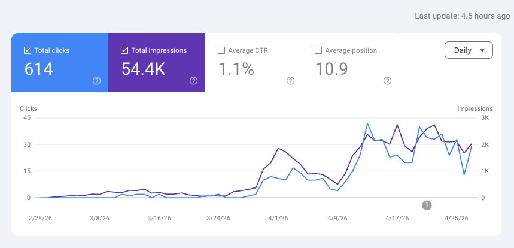
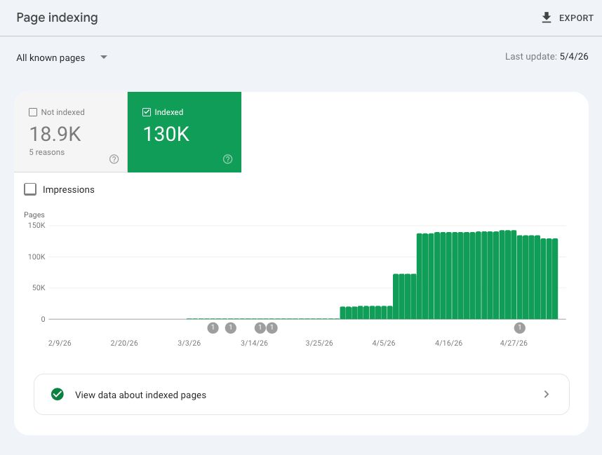
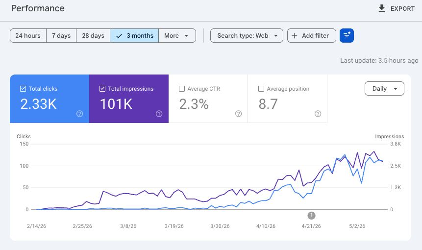
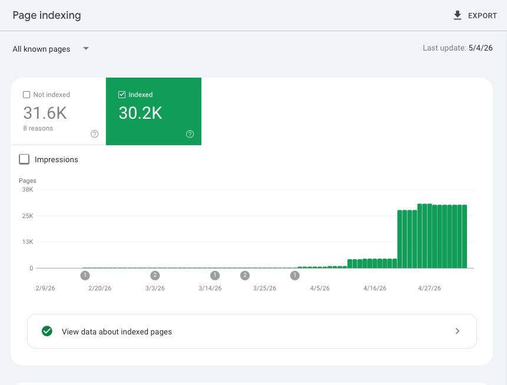

Case Studies & Demos
Production systems with verified metrics, video demonstrations, and open-source implementations. Every claim is backed by code, telemetry, or third-party certification.
Autonomous Multi-Agent DAG Pipeline
Problem
Enterprise retail clients needed localized, SEO-compliant product pages across dozens of cities. Manual content creation was impossible at ~10.5M product-location combinations per cycle.
Approach
Designed a fail-closed 7-node DAG where 80% of compute is deterministic (gates, schemas, dedup) and only 20% is probabilistic (LLM). Every node boundary is audited by a JIT integrity layer.
Result
400K+ impressions across 3 client properties, 68.9% quality pass rate, <$0.0001 per pipeline run. 234 managed websites across 5 countries.
Hockey-stick from 0 → 99.9K in ~60 days. Autonomous pipeline output.

1.1% CTR, Avg Position 10.9. Zero manual content creation.

Steep growth curve from 0 → 130K. Largest property by page volume.

0.9% CTR, Avg Position 8.7. Highest impression volume.

Rapid ramp from 0 → 30.2K. Newest property in pipeline.

2.3% CTR, Avg Position 8.7. Highest-converting property.
Quality vs. Cost
Multi-model O-R-A-V evaluation instead of a single LLM-as-judge. Each dimension uses a different model tier to balance accuracy with cost.
Safety vs. Throughput
Fail-closed design means ~31% of content is rejected. Intentional — no partial or low-quality content ever propagates downstream to production surfaces.
Self-Improvement
3-tier RLAIF data flywheel. DPO preference pairs generated automatically for continuous alignment without human labeling.
Scale vs. Locality
5 countries require different linguistic, cultural, and regulatory context. Node 1 injects locale-specific signals before any LLM invocation, ensuring adaptation without prompt bloat.
Gemma 4 MoE — Vertex AI Deployment Forensics
Problem
Gemma 4 MoE was newly released with no production deployment guides. Required custom vLLM builds, GCSFUSE container configs, and careful chat template engineering.
Approach
Systematic forensic debugging across 2 deployment cycles (16+ hours, 30+ versions). Every crash, OOM, and dependency conflict documented with root cause analysis.
Result
documented. Stable base inference achieved. LoRA enablement identified as blocked by dependency triangle.
Antigravity-OS — AI Agent Governance Kernel
Problem
AI-assisted coding agents operate without cost guardrails, state persistence, or policy enforcement. Runaway token costs and context window mismanagement are common failure modes.
Approach
Built a governance kernel with cost enforcement (per-session and cumulative budgets), policy-as-code rules, and deterministic state tracking. MCP integrations provide tool access for managed agents.
Result
Open-source on GitHub. Full governance docs: ADOPTERS, MAINTAINERS, SECURITY, CONTRIBUTING, GOVERNANCE.